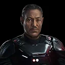
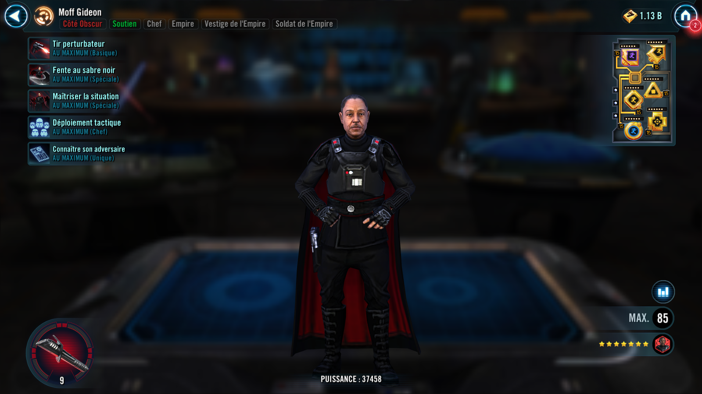
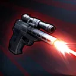
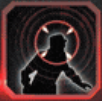
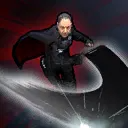
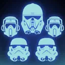
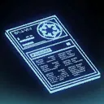

Moff Gideon
Empire Leader that can lead a fireteam into battle and punish enemies with the Leader tag

Empire Leader that can lead a fireteam into battle and punish enemies with the Leader tag


Deal Physical damage to target enemy and gain 1 stack of Insight, which can't be copied, dispelled, or prevented. If Moff Gideon has at least 4 stacks of Insight, he gains the Special ability Subversive Volley. Insight stacks last until the end of the encounter.
Subversive Volley: Deal Physical damage to all enemies and Daze them for 2 turns. This Daze can't be resisted by enemies with the Leader tag. Moff Gideon loses all stacks of Insight and this ability is removed.

Deal Physical damage to all enemies and Daze them for 2 turns. This Daze can't be resisted by enemies with the Leader tag. Moff Gideon loses all stacks of Insight and this ability is removed.

Deal Physical damage to target enemy and inflict Armor Shred for the rest of the battle.
Call all Imperial Trooper allies to assist, dealing 30% less damage. All units lose 100% Turn Meter, which can't be resisted. Allies gain 25% Turn Meter. Tank allies Taunt for 2 turns, Attacker allies gain 50% Offense for 2 turns, and Support allies gain 100% Protection Up.

Dark Side allies have +30% Max Health and Max Protection, and Imperial Trooper allies have +15% Offense.
At the start of battle, if all allies are Imperial Troopers and Moff Gideon has exactly one Tank ally, two Attacker allies, and one additional Support ally, excluding summoned allies (in 3v3 Grand Arenas, if all allies are Imperial Troopers and Moff Gideon has any combination where the team includes no more than one Tank, two Attackers, and/or an additional Support ally the conditions of this ability will be met):
- Whenever an enemy with the Leader tag uses an ability, Imperial Trooper allies gain 10% Offense (stacking) until the end of the encounter
- Whenever an enemy with the Leader tag takes a turn, Moff Gideon gains 1 stack of Insight
- Imperial Trooper allies have an additional +25% Offense and revive with 50% Health and Protection the first time they are defeated each encounter

At the start of Moff Gideon's first turn of each encounter, he inflicts Demoralized on all enemies (excludes raid bosses and Galactic Legends) until they are defeated, Moff Gideon is defeated, or the end of the encounter. Demoralized can't be copied, dispelled, or resisted.
Demoralized: -50% Offense, -25% Critical Chance, -25% Critical Damage; this does not stack with other debuffs